Growth Tools & Strategy.
Build Fasset a growth system your team can keep running. We do the research, read the numbers, and design the experiments across funnel, Meta creative, and Reddit. Your team runs them.
Funnel
Fix the funnel before spending more on ads. A better ad just sends more people into a leaky one.
- Audit your app, screen by screen, with real drop-off numbers. Install to sign-up to basic KYC to full KYC to first deposit to first action to day 7/30. The biggest drop becomes the first test.
- Tear down the competition the same way, regional and global. Where they have publicly A/B tested their onboarding, we borrow the proven winner.
- Turn gaps into flag-gated experiments your engineers ship without a meeting. We spec, they flag, we read, they keep or revert.
The teardown
The artifact we produce is a screen-by-screen teardown, with the drop-off and the job each screen is doing. Examples of the format:
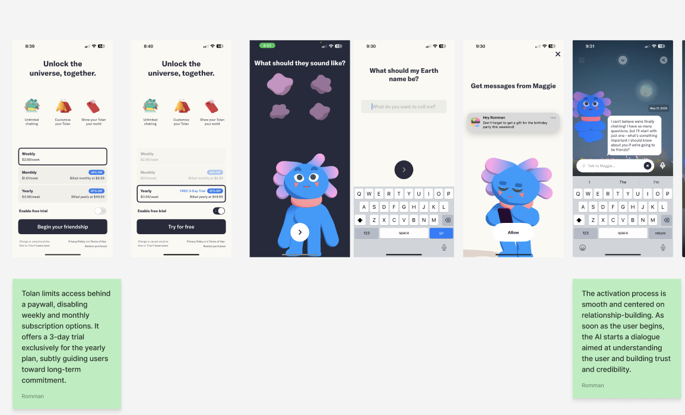
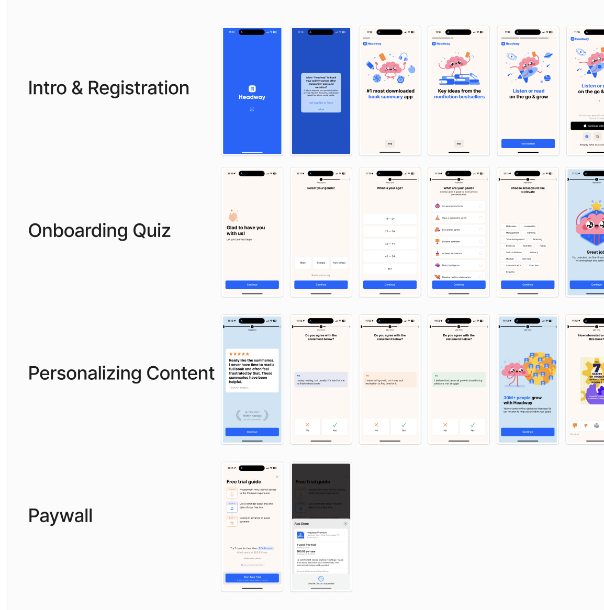
We map the flow install → sign-up → basic KYC → full KYC → first deposit → first action → day 7/30, and for each screen record step conversion, drop-off %, time on step, and the one job that screen should do. Public reviews suggest the deep leak is post-KYC (stuck withdrawals, freezes), which the audit confirms or kills with data.
Tools: analytics (PostHog default, or Amplitude / Mixpanel), and feature flags (PostHog built-in, or Statsig).
Meta creative
We pull your live ads and your competitors', then read them by age and angle. Age shows what has survived, since brands kill losers fast. The angle mix shows what each competitor is betting on: one runs 160 ads behind a single dominant angle, another spreads across five. The ads that last tell us the creative types and script ideas worth adding to your backlog.
- A content backlog, built from what is proven. Every angle, offer, and market gets a queue of well-defined ideas, so your team always has something to make.
- An 80/20 budget split. 80% on proven winners, 20% on new angles from the backlog, with written rules for what graduates and what gets cut.
- Creators and briefs. We help pick the creators and write the briefs. Concept-led, personal videos ("how I bought SpaceX stock and what happened"), each cut into several versions to test different hooks. Your team films and posts.
- A weekly creative report that reads each creative on its own numbers. A low hook rate means the first three seconds don't grab; a low hold rate means the middle loses them.
When a creative earns cheap, qualified clicks but users still don't fund, the problem sits in the funnel, and the funnel workstream picks it up.
The ad pull
The accounts and volumes we pull and read by age and angle. 100 of yours, 545 across competitors.
| Advertiser | Live ads | Oldest ad (days) | Video | Image | Carousel |
|---|---|---|---|---|---|
| Fasset | 100 | 22 | 61 | 37 | 2 |
| Robinhood | 169 | 238 | 75 | 93 | 1 |
| Wise | 168 | 29 | 56 | 112 | 0 |
| Binance | 165 | 325 | 109 | 56 | 0 |
| Payoneer | 24 | 37 | 1 | 23 | 0 |
| Bybit | 13 | 40 | 5 | 8 | 0 |
| Wahed | 6 | 7 | 6 | 0 | 0 |
We group them by concept and angle, with volume and longevity on each. Example of that analysis:
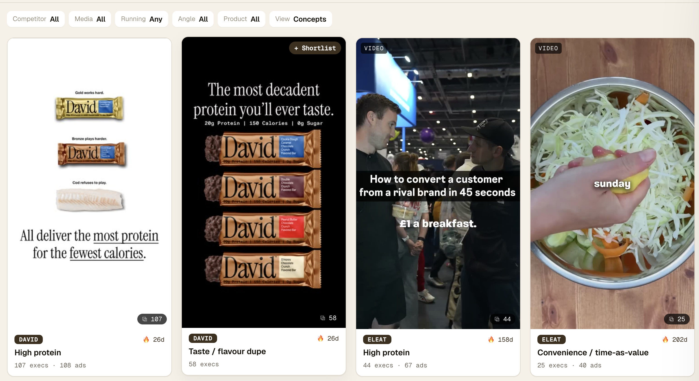
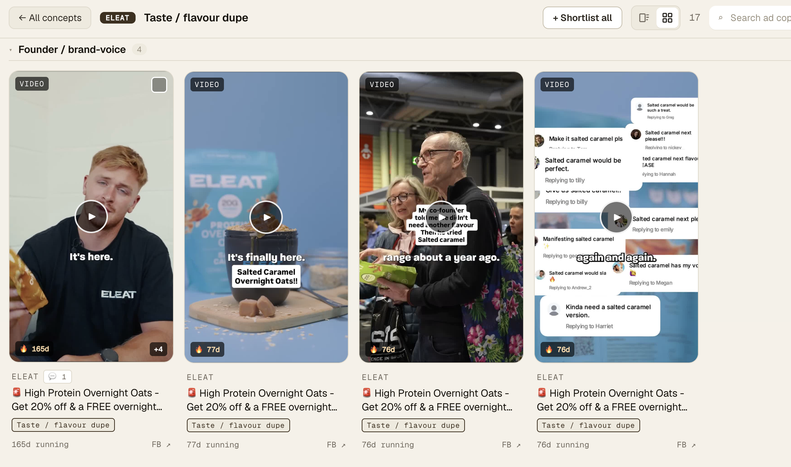
The backlog
The backlog perf marketing works from every week: format, product, angle, owner, and status.
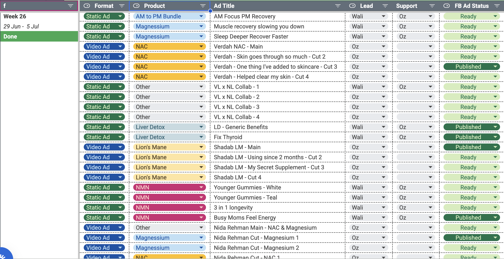
Creator examples
One creator video per concept, each a different angle on the same product. Cursor:
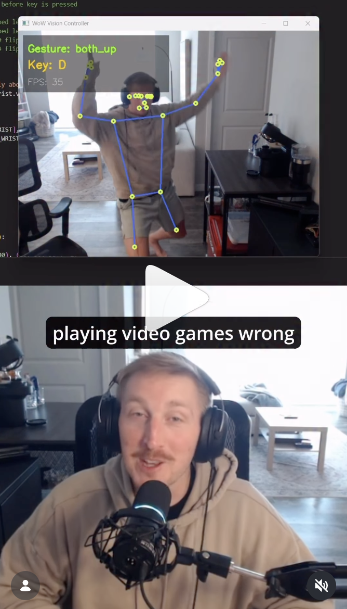
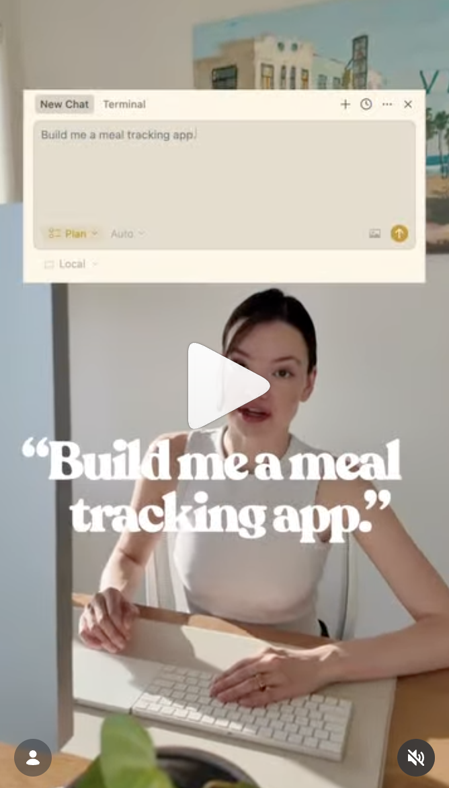
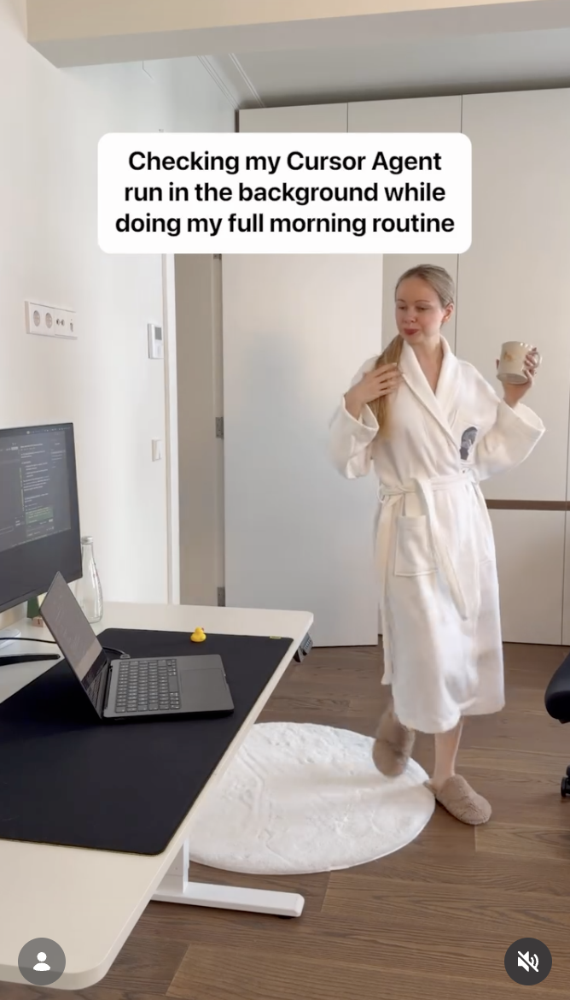
Vitalis (local):
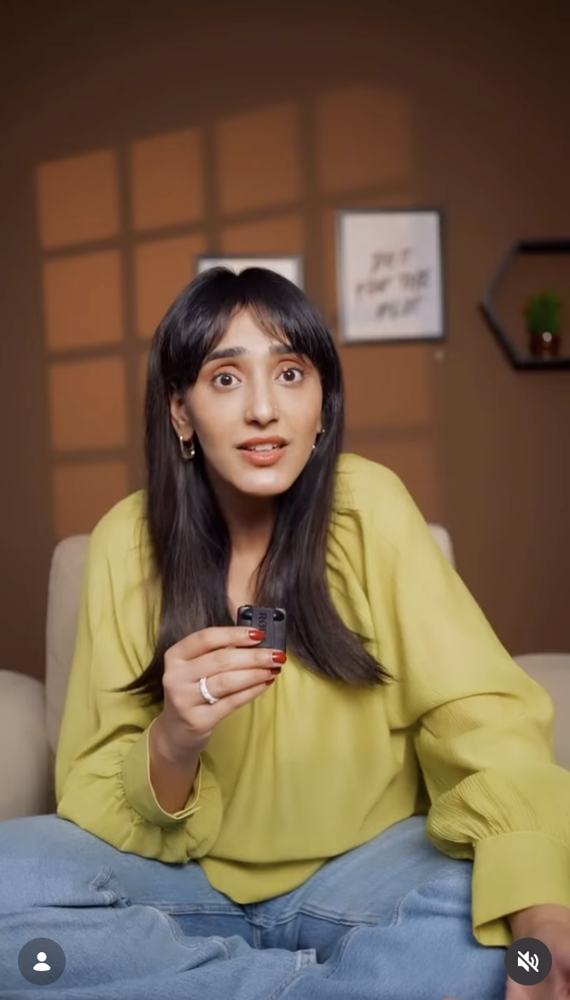
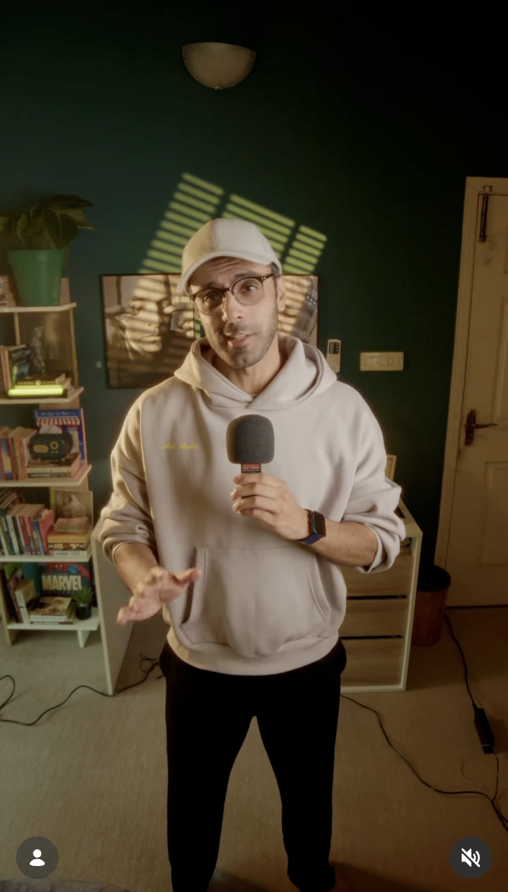
Source posts — Cursor: 1, 2, 3. Vitalis: 1, 2.
Adapting one video to test different hooks: open the deck (PDF) · Figma.
Build authority where your users already are. You are near-invisible on Reddit today, and that audience is unclaimed.
We set up social listening to surface threads worth joining, and anything that mentions Fasset, so warmed-up, high-karma accounts get into the conversation early. A free tool like F5Bot flags every Reddit mention of your keywords in real time. A real thread it would catch, in r/FIREPakistan:
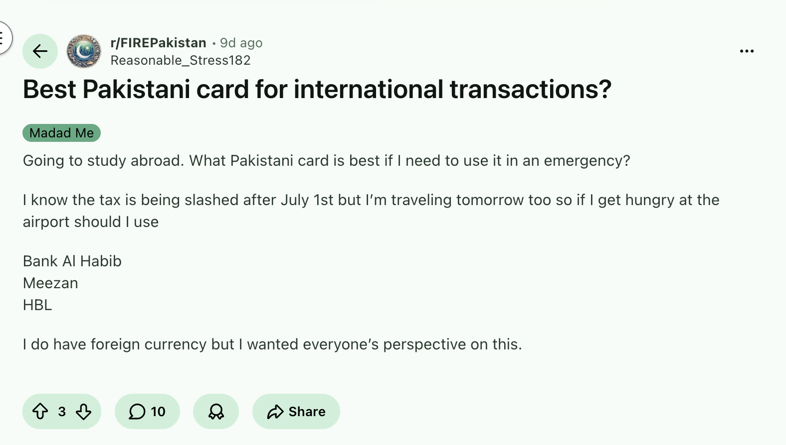
Someone going abroad, asking the exact question Fasset answers. A genuinely helpful reply from a disclosed account, naming Fasset as an option, is the play.
AEO follows for free, because the engines cite Reddit heavily. For now we just track what ChatGPT, Claude, Gemini, and Perplexity say about you. It can become its own workstream later.
Tracking the AI answers
What the AI engines say about the money queries today, and where they pull it from. Example, "Payoneer alternative Bangladesh":
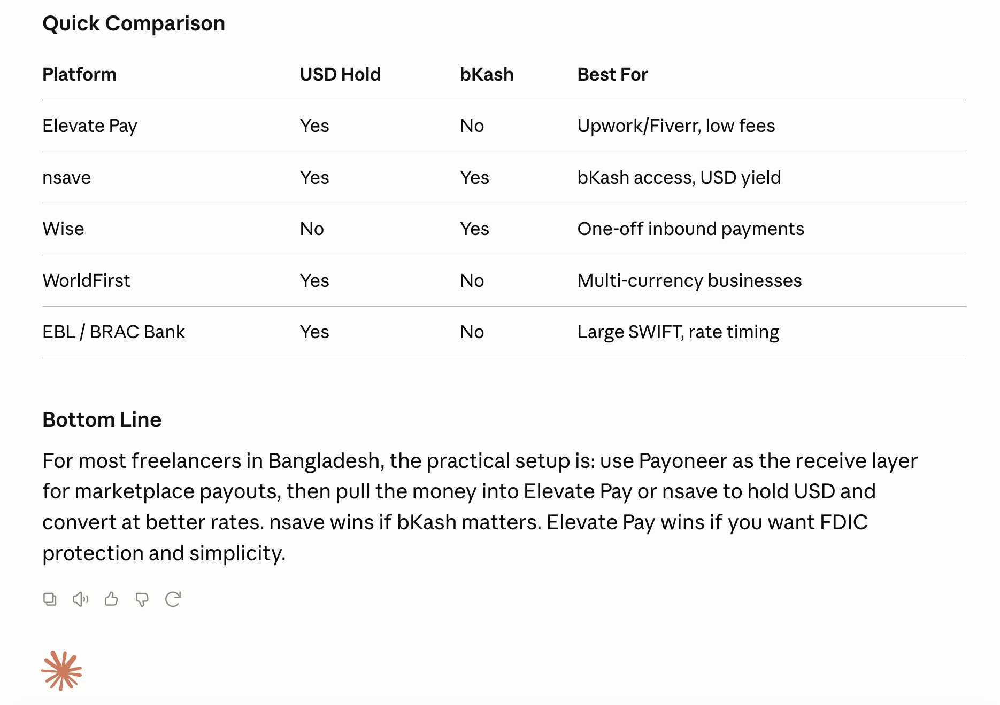
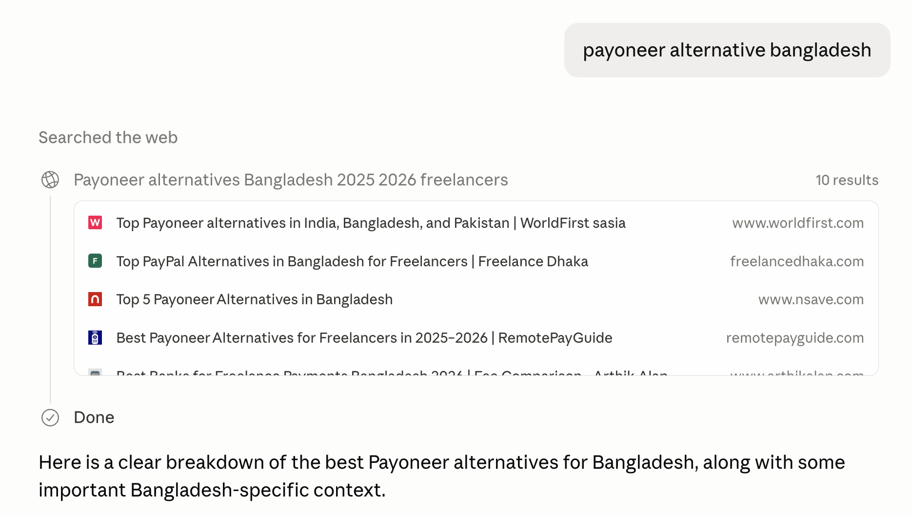
The answer recommends nsave, Elevate Pay, Wise, and WorldFirst. Fasset is not mentioned. It pulls from worldfirst.com, nsave.com, freelancedhaka.com, and remotepayguide.com.
- Track. A target keyword list (USD account Pakistan, Payoneer alternative Bangladesh, is Fasset legit, halal investing, pay for Netflix from Pakistan), logging the sources each engine cites, across ChatGPT, Claude, Gemini, and Perplexity.
- Build. The strategy to get Fasset into those answers: earn a place on the cited sources, and publish the structured content the engines reward.
We suggest a tool for the tracking (Profound, Peec AI) or custom-build the agent.
How we work
Define success
North star: CAC to a funded account. Installs and sign-ups do not count until money lands.
Guardrails: KYC-complete rate, day-30 retention, blended ROAS.
How we read a test depends on what it tests. Acquisition and activation fail for different reasons, so they read on different numbers.
- Acquisition (creative, angles, audiences): hook rate, hold rate, CTR, CPI. Does the ad earn cheap, qualified attention that clicks?
- Activation (funnel, onboarding): step conversion, KYC-complete rate, funded rate. Does that click turn into a funded user?
We set each test's target metric before it runs, then read it against the target:
Targets hold for the length of the test. No moving goalposts.
Run growth like engineering
- Every experiment and task lives in Linear, so the whole roadmap is visible and tracked.
- A monthly planning sprint sets the batch of experiments. A weekly review reads results and adjusts.
- We write the tickets (hypothesis, change, metric, kill point); your team executes them.
Each month runs the same loop: refresh the numbers, design the next batch of experiments, hand them over specced and ready, then read out what won, what got killed, and what is next.
We do the thinking and the measurement. Your team does the posting and shipping. Small improvements compound month over month.
Engagement options
Option 1 — Growth consulting
- Monthly planning sprint and weekly review calls
- Experiment and task tickets in Linear (hypothesis, change, metric, kill point)
- Funnel, Meta, and Reddit experiment design
- The scraped-ad analysis and content backlog